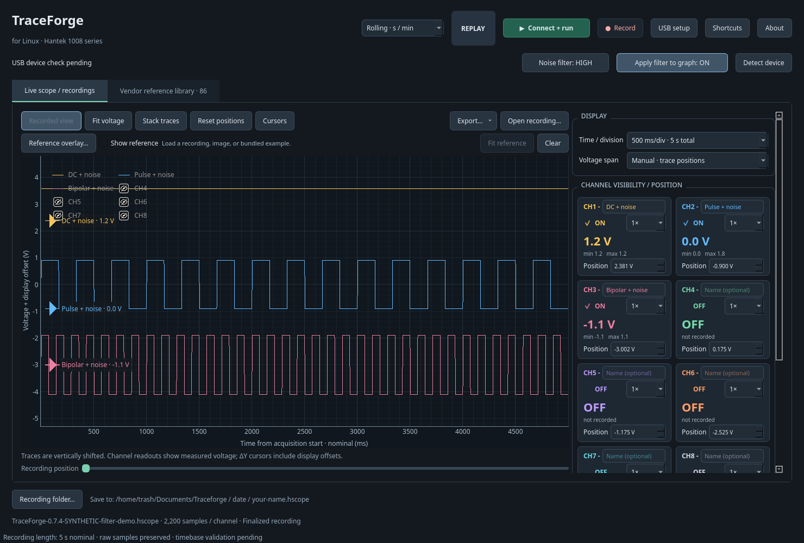

Open a terminal in your download folder.
chmod +x TraceForge-0.7.5-x86_64.AppImage
./TraceForge-0.7.5-x86_64.AppImageVersion 0.7.5 · Public beta
See your signals. Save the whole recording. Compare waveforms in the same graph. TraceForge brings your eight-channel USB scope to a native Linux desktop.
Free download · x86_64 Linux · Python libraries included

From live signal to saved comparison
Name channels, hide the ones you do not need to see, and drag their left-side handles to separate the traces. Hiding a live channel keeps acquisition running and its samples in the recording.
Give your recording a name and save continuously to a dated folder. Reopen it with channel names intact, then export CSV data or an MP4 video. Display rounding leaves the recorded samples unfiltered.
Overlay another recording, an included reference example, or an image. Keep the comparison inside the app while positioning your traces. Image overlays are visual references, not measured data.
Start with the AppImage
The AppImage includes Python and the application libraries. Run it as your regular Linux user.
Release notes & SHA-256 checksumschmod +x TraceForge-0.7.5-x86_64.AppImage
./TraceForge-0.7.5-x86_64.AppImageThe app opens a terminal, shows the commands, and asks for sudo to install its USB access rule. Desktop and application-menu shortcuts are optional.
Choose Record to name and save a capture. The default location is ~/Documents/Traceforge/YYYY-MM-DD/, and you can change it in the app. Saved recordings can be opened without a connected scope.
Know what has been tested
TraceForge has been tested with a Hantek 1008B. Compatibility with the 1008A and 1008C has not yet been verified. Reports from owners of those models are welcome.
The downloadable AppImage targets glibc 2.35 or newer. Builds have been checked against an Ubuntu 22.04 baseline and on Garuda Linux. Wider distro testing is ongoing.
Timing is nominal and still needs hardware validation. Changes that alter the hardware capture rate can restart acquisition and split an active recording into parts. Read the timing notes.
Practical details
No. TraceForge runs natively on Linux. When building from source, the builder downloads or locates Hantek’s Windows software ZIP to extract required vendor files; it does not run the Windows installer.
Try the extract-and-run option from the same folder:
APPIMAGE_EXTRACT_AND_RUN=1 ./TraceForge-0.7.5-x86_64.AppImageThe source builder has prerequisite instructions for those distro families and sets up a private Python environment when needed. See the commands for your distro in the README, then run:
chmod +x build.sh
./build.shDownloads, driver source and build dependencies are acquired separately. Only TraceForge’s own files are carried in its source package.
No. The Noise filter control rounds displayed voltage readings to three, two or one decimal places. Apply filter to graph rounds the plotted display too. Recordings keep the unfiltered samples; this control is display rounding, not a frequency-selective noise filter.
Run the package check, then open a GitHub issue with your distro version, scope model, app version and what happened:
./TraceForge-0.7.5-x86_64.AppImage --self-test traceforge-check.jsonThis checks the package without capturing hardware samples.
Put your scope to work